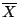

1 under H1
as n
1 under H1
as n

| [Stat Inf II classnotes, ISI, Kolkata] |
| (*) |
E(φ)
1 under H1
as n
|
Where is 'n' in E(φ)? Actually, φ involves n. Thus, we should better write φ as φn. In other words, all thes tests we have considered so far may be thought of as a sequence {φn}.
| Definition: If (*) holds then we say that the test (sequence) is consistent. |
All the tests considered so far are consistent. The general argument is as follows. We shall work with only upper one-sided tests (the argument is similar for lower one-sided or two-sided tests.)
All such test have rejection regions of the form
Tnfor some test statistic Tn and some critical value cn. For all the tests we have considered Tn's are some form of averages, and we havecn,
Tnfor some function b(.) of unknown parameter θ.
Also, for our tests we have
cnfor some c.
Exercise ASYMP.1:
Show that if
b(θ) > c for all θ under H1,then the test is consistent. |
Example:
Suppose we have data X1,...,Xn iid N(θ,1).
We want to test
H0: θ = 0 Vs H1: θ > 0.We already have the usual normal test which rejects H0 for large values of  . Also, we have learned about sign test which rejects H0 for large values ofS =Both the tests are unbiased and consistent. Which one is better and byhow much? It is not difficult to guess that the normal test is better, because it uses more information. Our aim below is to quantify this idea. |
Definition:
Let ξ and φ be two tests based on the same data. Fix a
β in (0,1). Fix θ in H1.
Let m be the sample size required by φ to attain
this power at θ. Similarly, ξ needs sample size n for the
same. Then the ratio
RE(θ,β) = m/nis called the relative efficiency of φ w.r.t ξ for power β at θ. |
Exercise ASYMP.2:
We could also define a similar quantity as the ratio of the powers
attained for a given sample size:
PowerRatio(θ,n) = ratio of powers at θ for sample size n.Discuss why RE is more applealing than this definition. |
Exercise ASYMP.3:
Suppose that we have data
X1,...,Xn iid N(θ,1).We want to test H0: θ = 0 Vs H1: θ > 0at 5% level. We shall use the usual parametric test. What sample size do you need to get power β = 0.8 if actual θ = 1? |
Finding required sample size is easy if the distribution of the test statistic is manageable for the given θ. For most nonparametric tests, however, it is difficult. So one needs to use asymptotic approximations. This is shown below.
Exercise ASYMP.4:
Again consider the same problem as above. But this time we shall use the sign
test. The exact distribution of the sign test statistic, S, is Binomial(n,p)
where p = P(X > 0). Since binomial distribution is difficult to work
with for large n, we shall use the normal approximation:
S ~ AN(np, np(1-p))Compute p for θ=1. Using the above approximate distribution find the sample size required to achieve power β=0.8 at θ=1. |
Taking the ratio of the sample sizes obtained in the last two exercises yields approximate RE(1,0.8) for sign test at level 5% wrt normal test at the same level. It is approximate because we have approximated the distribution of S with a normal distribution using CLT.
. Now, here n is not a free
parameter. It is just a finite number which is computed from β and
θ. So the problem does not involve any limit whatsoever yet we
have used CLT to get an "aproximation". In the eye of the practising
statistician this is of course a minor point. But in order to keep our
mathematical concsience clear, we define an asymptotic version of RE where
the large sample approximation can be mathematically justified.The main idea behind the definition that we are about to present is this. We want to compare two test sequences with power β at some point θ in H1. Also, we want to let sample size, n, tend to infinity. Since out of the three quantities
β, θ and nany two determines the other, we cannot keep both β and θ fixed and yet let n tend to infinity. So we let θ vary as follows.
Notation:For a test sequence φ = {φn} and a sequence of simple alternatives θ={θn}, define
power(φ,θ,n) = E(φn) at θn.
This notation is not standard. It is only for use in these classnotes.
Definition:
We have a test (sequence) {φn}.
Fix β in (0,1).
Call a sequence
θ={θn} in H1 contiguous if
power(φ,θ,n)as n goes to infinity. |
Exercise ASYMP.5:
Consider the normal test above at level 5%. Show that
{θn}
is contiguous at β = 0.8 iff
sqrt(n)*θn |
Definition:
Let φ and ξ be two test sequences
for the same H0 and H1. Fix β in
(0,1). Let {θn} be one contiguous sequence for
φ. Let f(n) be the sample size such that
power(ξ,θ,f(n))If the limit of n/f(n)exists as n tends to infinity, and the limit is free of {θn} then we call this limit as the asymptotic relative efficiency (ARE) of ξ wrt φ at θ for power β. |
You should remember that the not-too-rigourous method of approximating the RE yields essentially the same result as ARE. The latter is useful only to soothe our mathematical conscience.
| Exercise ASYMP.6: Use the contiguous sequence from the last exercise to show that the ARE of the sign test wrt the normal test (both at level 5%) at β = 0.8 is 2/π (about 64%). In particular, note that this ARE does not depend on β. |
 sign(Xi).
sign(Xi).